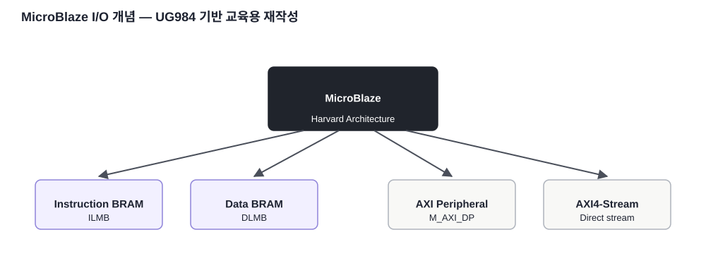
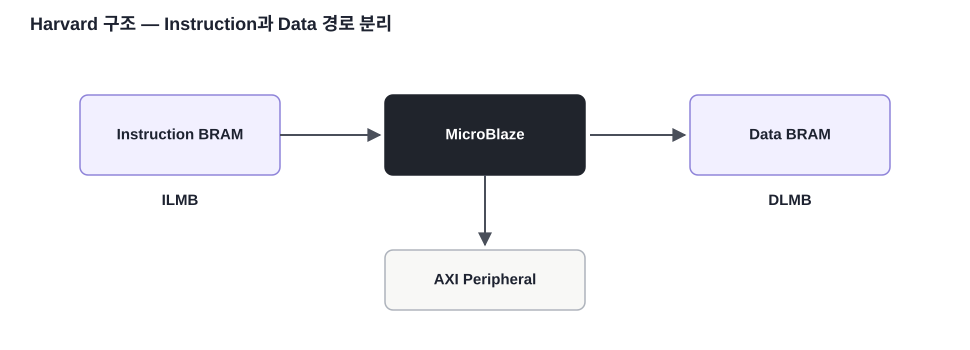

CPU
Instruction과 Data 경로를 분리해 접근합니다.
FPGA / SoC 개념 · 05
MicroBlaze의 Instruction/Data 경로, LMB, BRAM, AXI Peripheral을 연결하여 CPU가 명령과 데이터를 어떻게 접근하는지 정리합니다.
Instruction과 Data 경로를 분리해 접근합니다.
LMB는 BRAM에 대한 낮은 지연의 로컬 접근에 사용됩니다.
AXI는 GPIO·UART·Timer·Custom IP 연결에 사용됩니다.

UG984는 MicroBlaze를 Instruction Access와 Data Access의 Bus Interface Unit을 분리한 Harvard Architecture로 설명합니다. Program Instruction을 읽는 경로와 Data를 읽고 쓰는 경로를 분리할 수 있습니다.

| 인터페이스 | 주요 연결 | 특징 |
|---|---|---|
| ILMB | Instruction BRAM | 로컬 명령어 메모리 |
| DLMB | Data BRAM | 로컬 데이터 메모리 |
| M_AXI_DP | Peripheral / Memory | AXI4 또는 AXI4-Lite Data 접근 |
| M/S_AXIS | Streaming IP | 주소 없는 연속 데이터 전송 |
이 연결을 이해하면 Software와 RTL이 분리된 것이 아니라 Memory-Mapped I/O를 통해 같은 하드웨어 시스템 안에서 연결된다는 점이 보입니다.
본문의 기술 내용과 교육용 재작성 그림은 아래 공식 문서를 기준으로 검증했습니다. 원문 전체를 복제하지 않고 핵심 구조를 학습용으로 재구성했습니다.